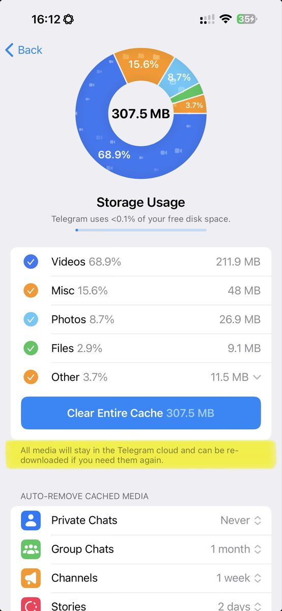

小虚空🍥
@tokerumaisurii
@Fenng @yaosiscom 这句话，用荧光高亮的这句话，我就问你微信敢写吗，如果它不敢写那用户又怎么敢放心清缓存？那又怎么能说只是用户“自己的行为”而没有微信一点责任？哪怕你说这样会让微信服务器压力巨大，那至少他们给用户一个付费买云记录存储服务的机会啊，他们有吗？

Fenng
@Fenng
@yaosiscom 设置 - 通用 - 存储空间
为什么要把自己的行为归结为别人的错。